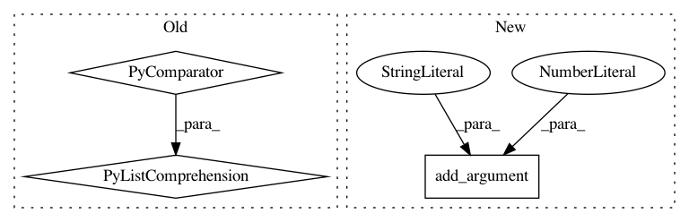

9dab8ae56ce90f1b9ba6808a6e0673ab6f13103e,GANs/stylegan2/generate.py,,main,#,98
Before Change
print(f"using style noise seed {args.seed_mix} for layers {args.mix_after}-{num_layers}.")
rnd = np.random.RandomState(args.seed_mix)
z2 = rnd.randn(batch_size, 512)
style_noises = [nn.Variable((batch_size, 512)).apply(d=z)
for _ in range(args.mix_after)]
style_noises += [nn.Variable((batch_size, 512)).apply(d=z2)
for _ in range(num_layers - args.mix_after)]
else:
// no style mixing (single noise / style is used)
After Change
parser.add_argument("--truncation-psi", default=0.5, type=float,
help="value for truncation trick.")
parser.add_argument("--batch-size", type=int, default=1,
help="Number of images to generate.")
parser.add_argument("--mixing", action="store_true",
help="if specified, apply style mixing with additional seed.")
parser.add_argument("--seed-mix", type=int, default=None,
In pattern: SUPERPATTERN
Frequency: 3
Non-data size: 3
Instances
Project Name: sony/nnabla-examples
Commit Name: 9dab8ae56ce90f1b9ba6808a6e0673ab6f13103e
Time: 2020-12-15
Author: Krishna.Wadhwani@sony.com
File Name: GANs/stylegan2/generate.py
Class Name:
Method Name: main
Project Name: sony/nnabla-examples
Commit Name: 7d8f3f66495979f1bbd27205d422d673991709f2
Time: 2021-01-26
Author: Krishna.Wadhwani@sony.com
File Name: GANs/stylegan2/generate.py
Class Name:
Method Name: main
Project Name: erikbern/ann-benchmarks
Commit Name: be3c3b145f9c25d5629a96d616040ff652522a87
Time: 2017-05-11
Author: alef@itu.dk
File Name: plot.py
Class Name:
Method Name: